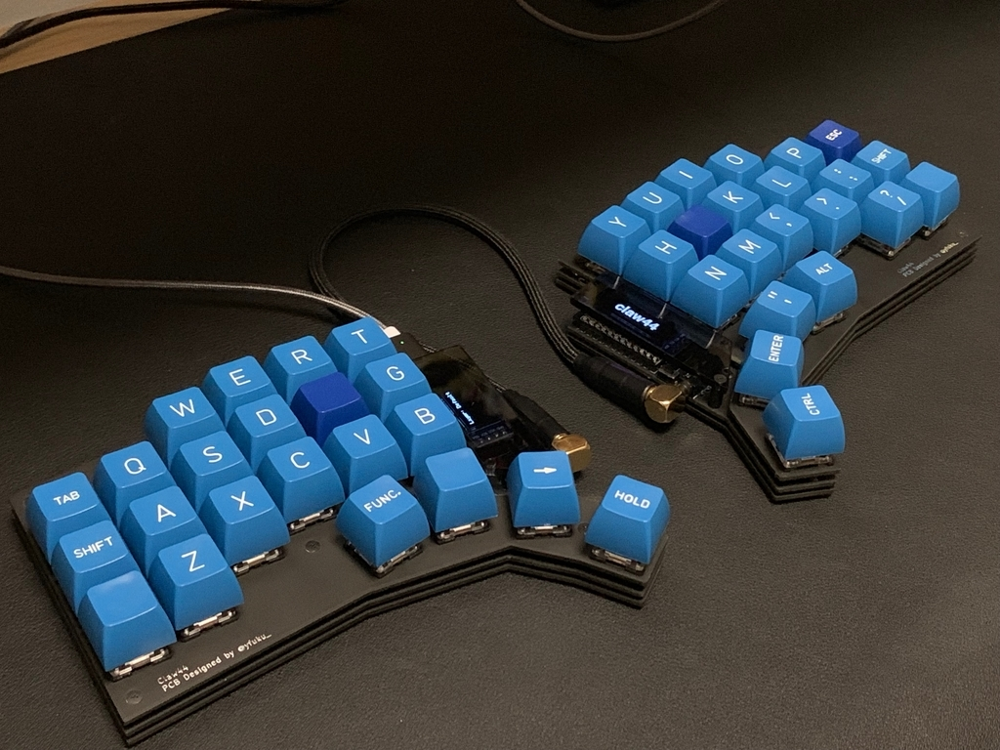

前回の記事、「自作キーボード Claw44を作ってます」からだいぶ間が空きましたが、初のPCBができ上がってました。
twitterには載せていたのですが、興味持ってくれている人もいるようなので、ブログでも紹介します。
あらためてClaw44とは？
- yfukuが設計しているキーボード
- 6列x3行 + 親指キー4個の両手で計44キーの分割型
- 一般的なデザインより親指、小指のキーを手前側に引っ張ってきたような形
- キー全体を内側に6度傾斜
- 親指ホームポジションが1.25U
というような特徴を持っています。

当初、キーボード設計なんてできないと思っていましたが、既存のキットでは親指小指が自然に収まらない気がして作ってみようと思い立ちました。
自分の手に合うように作ってあるので、自作キーボードの最初の1台というよりは、ある程度スプリットキーボードを使って、自分と同じような思いになった人に試してみてもらいたいです。
（余談ですが、もしかしたら自分はキーボードに手を乗せる時に、グーというよりはパーに近い状態になっているのかもしれないです。そのため、親指小指がグーに近い状態よりかは本体より遠い位置に置かれてしまう。他の人をジロジロと観察もできないので、あまり確証は無いですが。手の大きさは平均くらいなのでそんなに関係ないかなあと。）
alpha版
という事で、こちらが初のPCBです。
動くかどうかもわからないのに、マットブラック（ちょっとお高い）にしてしまったけどやはりかっこいい。
先人たちの教えのおかげで動作は問題なく、毎日仕事でも使っています。

alpha版からの修正点
現在は気になった点を修正して再度PCBの発注をしたところです。
PCB的にはけっこう変えてしまったので、ちゃんと動くかはわからない^^; まだalpha2くらいなイメージです。
そして、春節前にギリギリ間に合うかくらいで発注したのですが、連絡ないので届くのは2月後半くらいかな。。
- 改善点
- OLEDの穴が想定とずれていたのを修正
- ネジ穴のメッキが目立つので隠れるように小さくした
- キースイッチの穴を正向きに修正
- 配線や各パーツの大きさなど微修正
- 不要なシルクの削除
- 薬指スワップの追加
自作キーボード設計のすすめ
自作キーボード設計入門(電子版) - Pastry Keyboard - BOOTH
おそらく、この本がなかったら何もできていなかったと思います。設計に興味がある方はぜひ手にとってみてください〜
キーキャップ着せ替えギャラリー
ふとしたきっかけからキーキャップ沼にハマることになりましたw
貴重なキーキャップたちをお借りできたのでClaw44にはめて掲載してみます。(
べるさんありがとうございました！）
べる・なるどさんのツイート: “Pulse貸してあげましょうかw… “
-
SA Pulse（べるさん）

-
DSA Solace（べるさん）
-
GMK Laser（べるさん）

-
Devlin K-Series（べるさん） 
-
SA Black Blank